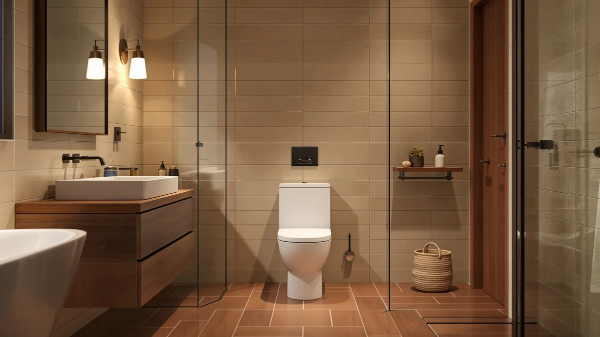

Kohler Santa Rosa Continuousclean St One-Piece Compact Elongated Review (2026): Worth It?


Quick Answer
The Kohler Santa Rosa Continuousclean ST is a compact elongated one-piece toilet that adds Kohler's self-cleaning glaze to the familiar Santa Rosa shape, and at $539.77 it costs about the same as the American Standard Compact Cadet and the TOTO DuoFit in-wall tank system in this comparison. It earns the price if that glaze matters to you; buyers after the lowest Santa Rosa price should compare the un-glazed 30810-RA-0 alternative below instead.
Our pick: KOHLER 30812-0 Santa Rosa Continuousclean — $539.77 Check Price on Amazon
Bottom line: our top pick is the KOHLER 30812-0 Santa Rosa Continuousclean St One-Piece at $539.77.
Things to Know Before You Buy
- The Continuousclean ST is a compact, elongated one-piece toilet, built as a single ceramic shell with no seam between tank and bowl.
- At $539.77, it costs about the same as the American Standard Compact Cadet ($539.00) and the TOTO DuoFit in-wall tank system ($535.99) in this comparison, and $16.27 more than Kohler's own Santa Rosa One-Piece ($523.50).
- ContinuousClean is Kohler's name for a glazed surface treatment molded into the bowl, which the brand markets as resistant to buildup between cleanings.
- Amazon's listing doesn't show a public star rating or review count for this ASIN, so we can't cite one here, and a missing rating isn't the same as a zero rating.
This kohler santa rosa continuousclean st one-piece compact elongated review exists because the toilet keeps surfacing in compact-bathroom searches without much independent coverage weighing whether its price matches its features. We went through Kohler's published listing, the current Amazon price and three other one-piece toilets in a similar price band to see how the Santa Rosa Continuousclean ST actually compares.
The short version: the Santa Rosa Continuousclean ST earns a look if you want a compact elongated one-piece toilet with Kohler's continuous-clean glaze and don't mind paying close to the same amount as the rest of the compact one-piece field around it. At $539.77, it costs barely more than the American Standard Compact Cadet below ($539.00) and the TOTO DuoFit in-wall tank system ($535.99), while Kohler's own Santa Rosa One-Piece undercuts all three at $523.50. If the self-cleaning glaze isn't a priority for you, that cheaper Kohler sibling is worth comparing first.
Why You Should Trust Us
Ilane Tall researches bathroom fixtures for Best One Piece Toilets, tracking manufacturer spec sheets, Amazon price movement and patterns across verified owner reviews for one-piece toilets like the Kohler Santa Rosa Continuousclean ST. This review is built from Kohler's published listing, current Amazon pricing and the feedback buyers leave on listing pages for this model and its closest competitors.
We do not run a testing lab. This research compares manufacturer listings, pricing and owner feedback rather than personal use of the toilet. When Kohler doesn't publish a figure, such as an independent glaze-durability test, or Amazon doesn't show a rating for this ASIN, we say so here instead of filling in a number we don't have.
Our Research Experience
This Kohler Santa Rosa Continuousclean ST review relies on research, not personal use of the toilet. We compared the Continuousclean ST against the American Standard Compact Cadet, the TOTO DuoFit in-wall tank system and Kohler's own Santa Rosa One-Piece using each listing's current Amazon price, published product details and the patterns in verified owner reviews on each page. We focused on price, bowl shape and surface treatment, the details compact-bathroom shoppers ask about most, and we excluded toilets without enough verified reviews or published details to establish a pattern.
This review states plainly if a figure such as a star rating or an independent glaze test is missing, instead of guessing at a number Kohler hasn't published. That approach means some comparisons here lean on listed prices and product descriptions alone rather than a head-to-head performance claim we can't support. We revisit the listing periodically as Amazon's price and review counts shift, and update this page when a comparison changes enough to matter.
Overview & Specs

KOHLER 30812-0 Santa Rosa Continuousclean
What we like
- Compact elongated one-piece shell fits bathrooms where a standard-footprint toilet doesn't
- Kohler says the ContinuousClean glazed surface resists buildup between cleanings
- Priced within a few dollars of the American Standard Compact Cadet and the TOTO DuoFit system in this comparison
Flaws but not dealbreakers
- Kohler doesn't publish an independent test confirming how long the ContinuousClean resistance lasts
- Amazon's listing doesn't show a public star rating or review count for this ASIN
- Costs $16.27 more than Kohler's own Santa Rosa One-Piece, which shares the same shape without the glaze
| Material | — |
| Size | — |
The KOHLER 30812-0 Santa Rosa Continuousclean is a compact elongated one-piece toilet built on the same Santa Rosa shape the brand has sold for years, with the ContinuousClean name referring to a glazed surface molded into the bowl at the factory. Because the tank and bowl form a single ceramic shell, there's no seam at the base where a two-piece model collects grime. At $539.77, the Santa Rosa Continuousclean ST sits close to the middle of this four-way comparison.
Kohler markets the ContinuousClean glaze as resistant to the buildup that leads to staining and odor between cleanings, though the company doesn't publish an independent lab figure confirming how long that resistance holds up. The elongated bowl follows the compact footprint Kohler uses across the Santa Rosa line, and shoppers comparing it against the brand's own 30810-RA-0 alternative below should weigh whether that glaze is worth the $16.27 price difference between the two.
What We Liked
The clearest strength of the Kohler Santa Rosa Continuousclean ST is the glaze it's named for. Kohler molds the ContinuousClean treatment directly into the bowl's surface, and the brand markets it as resistant to the kind of buildup that leads to staining and odor between cleanings.
We also like that the compact elongated shape keeps the footprint small while still giving you the elongated seat most adults find more comfortable than a round-front bowl. That combination matters in bathrooms where a standard one-piece toilet runs into clearance problems.
At $539.77, the Continuousclean ST also lands close to the American Standard Compact Cadet and the TOTO DuoFit in-wall tank system in this comparison, so you're not paying a steep premium for the glaze upgrade over a standard compact one-piece toilet. The single-shell construction also means fewer surfaces for grime to collect around the base, compared to older two-piece setups.
What Could Be Better
Kohler doesn't publish an independent test confirming how long the Kohler Santa Rosa Continuousclean ST's glaze actually resists buildup, so the claim rests on the manufacturer's own marketing rather than a verified figure. Shoppers who want third-party confirmation before buying won't find it on this listing.
Amazon's listing also doesn't show a public star rating or review count for this ASIN, so we can't point to a review-based track record the way we can for some one-piece toilets in this price range. A missing rating isn't the same as a poor one, but it does mean less third-party confirmation.
The Continuousclean ST also costs $16.27 more than Kohler's own Santa Rosa One-Piece, which shares the same compact elongated shape without the glaze. If the surface treatment isn't a priority for you, that cheaper sibling is worth comparing first.
Who Is It For?
This Kohler Santa Rosa Continuousclean ST review points toward one clear buyer: someone renovating a small bathroom who wants a compact elongated one-piece toilet and is willing to pay a small premium for Kohler's self-cleaning glaze over the brand's unglazed Santa Rosa. It suits buyers who've already confirmed the compact footprint fits their existing plumbing.
It's a weaker fit for anyone who wants independent confirmation of the glaze's durability before buying, since Kohler doesn't publish a lab figure for it, or anyone chasing the lowest price in the Santa Rosa line, since the 30810-RA-0 alternative below covers the same shape for $16.27 less. Shoppers who need bidet functions or an in-wall tank setup should look at the TOTO DuoFit alternative instead, since the Continuousclean ST is a standard floor-mounted toilet without either feature.
Alternatives to Consider
If the Kohler Santa Rosa Continuousclean ST's price, missing rating or glaze claim doesn't work for your bathroom, these three alternatives came up most often in our research into compact one-piece toilets in a similar price range. Each one trades a different feature of the Continuousclean ST for a different priority, whether that's brand, bowl setup, or price.

Also Great
American Standard 2403128.021 Compact Cadet
A compact elongated one-piece toilet priced within a dollar of the Continuousclean ST, for buyers who want American Standard's engineering over Kohler's self-cleaning glaze. Our Compact Cadet review covers the related 2403128.222 model in detail.
$539.00
Check Price on Amazon
Also Great
TOTO TWT172M DuoFit In-Wall Tank
An in-wall tank system rather than a standalone one-piece toilet, for buyers renovating toward a wall-hung setup instead of the Continuousclean ST's floor-mounted compact elongated shape.
$535.99
Check Price on Amazon
Best Value
KOHLER 30810-RA-0 Santa Rosa One-Piece
The same compact elongated Santa Rosa shape without the ContinuousClean glaze, priced $16.27 below the Continuousclean ST for buyers who don't need the self-cleaning surface treatment.
$523.50
Check Price on AmazonFrequently Asked Questions
Is the Kohler Santa Rosa Continuousclean ST worth $539.77?
For buyers who want Kohler's self-cleaning glaze on a compact elongated one-piece toilet, yes. It lands within a few dollars of the American Standard Compact Cadet and the TOTO DuoFit in-wall tank system in this comparison, though Kohler's own un-glazed Santa Rosa One-Piece undercuts it by $16.27. Buyers chasing the lowest Santa Rosa price should compare that sibling model first.
What does ContinuousClean actually do on the Santa Rosa ST?
ContinuousClean is Kohler's name for the glazed surface treatment molded into the bowl, which the brand markets as resistant to buildup between cleanings. Kohler doesn't publish an independent lab figure confirming how long that resistance lasts, so treat it as a manufacturer claim rather than a verified result.
How does the Continuousclean ST compare to the standard Santa Rosa One-Piece?
The two share the same compact elongated one-piece shape and sit within $16.27 of each other, with the Continuousclean ST priced at $539.77 against $523.50 for the 30810-RA-0 alternative. The difference comes down to whether the ContinuousClean glaze is worth that premium for your bathroom.
Final Verdict
This kohler santa rosa continuousclean st one-piece compact elongated review comes down to price and glaze finish. Kohler's compact elongated one-piece toilet adds a ContinuousClean glazed surface to the familiar Santa Rosa shape at $539.77, roughly in line with the American Standard Compact Cadet and the TOTO DuoFit in-wall system in this comparison, though $16.27 above its own un-glazed Santa Rosa One-Piece sibling. If the self-cleaning glaze matters enough to you to pay that premium, the Kohler Santa Rosa Continuousclean ST is worth the purchase. Buyers chasing the lowest price in the Santa Rosa line should compare the 30810-RA-0 alternative above first.